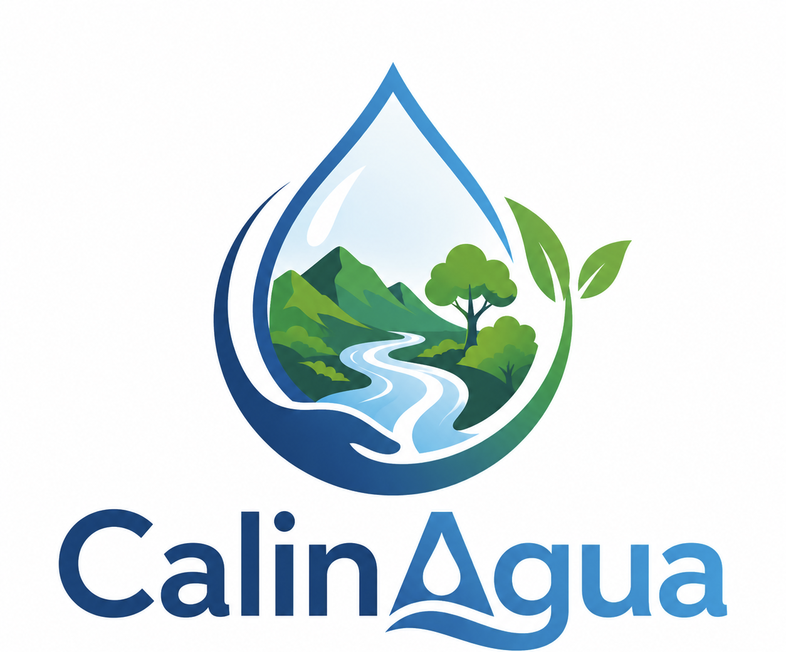

Se necesita conexion a internet
CALINAGUA usa mapas, graficas, clima y datos externos. Conecta el dispositivo a internet y vuelve a intentarlo.

CALINAGUA usa mapas, graficas, clima y datos externos. Conecta el dispositivo a internet y vuelve a intentarlo.